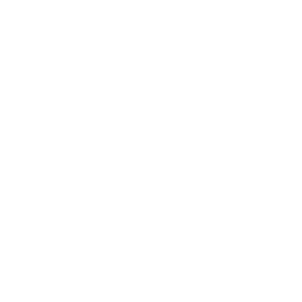

<aside [class.collapsed]="isCollapsed" class="sidebar">
	<div class="sidebar-layout">
		<button class="sidebar-toggler" type="button" (click)="toggleSidebar()" [attr.aria-label]="'sidebar.toggle' | translate">
			
		</button>
		<div class="sidebar-header">
			<div class="logo">
				
			</div>
			<h5 class="m-0 p-0">Ethicalsoft Compliance</h5>
		</div>

		<div class="sidebar-content">
			<nav class="menu">
				@if (menuItems$ | async; as menuItems) {
					<ul>
						@for (item of menuItems; track item.route ?? item.label) {
							<li
								class="menu-item"
								[routerLink]="item.route"
								routerLinkActive="active-link"
								[routerLinkActiveOptions]="{ exact: true }"
							>
								<span class="menu-icon">
									@if (item.icon) {
										
									}
								</span>
								<span class="menu-title">{{ item.label | translate }}</span>
							</li>
						}
					</ul>
				}
			</nav>
		</div>

		<div class="sidebar-footer">
			<app-language-selector />
			<div class="exit">
				<button (click)="exit()" [attr.aria-label]="'sidebar.exit' | translate" class="unstyled-btn">
					
				</button>
			</div>
			<div class="footer-box">
				<span>{{ 'sidebar.version' | translate: { version: '1.0' } }}</span>
			</div>
		</div>
	</div>
</aside>
